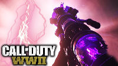

~Overview~
The Final Reich is a large map, with an above ground level, and an underground level.
~Village Entrance / Village Square~
- The players spawn in an alley, with one buyable door and two that require power. Players can purchase the M30 Luftwaffe Drilling or the Machine Pistol for 500 jolts per weapon, or buy Lebenblitz (500 on solo, 1500 on co-op).
- There is a barrier between the Village Square and the alley that costs 750 jolts. Here the players can find a gas valve, another power door, as well as a Geistchild machine, The Type 100 and SVT-40, both costing 750 jolts. From the Village Square the player can either go to the Riverside from the back or from the center. There is also a hole in the center of the square that after turning all gas valves, can be opened to get to the sewers and turn on the power. Inside this tunnel to the power generator is a door that leads to the Sewers for 1250 jolts, as well as Laufenblitz.
~Riverside~
- In the back and center of the Village Square there are doors that cost 1000 jolts that leads to the Riverside. There is an M1928 available for 1000 jolts directly across from the door in the back that costs 1500 jolts. Further back in the Riverside there is another gas valve, right next to the door that leads to the Pub. There is also a small dock that has a 1250 jolt door that leads into the Sewers.
~Courtyard~
- Near the M1928 is a 1500 jolt door that brings the player to the Courtyard. Here, a Mystery Box location is found, as well as the Lee Enfield for 1600 jolts. The S-Mine Trap is also present here for 1000 jolts. There is also a hole in the wall next to the painting used for the casual easter egg, which brings the player into the Laboratory inside the bunker.
~Pub~
- The Pub is a small area of the map, between the Village Entrance, Riverside and the Tower. It contains a painting for the casual easter egg, as well as the record player for the hardcore easter egg and Kugelblitz. A hole in the floor of the Pub brings the player to the door that connects the Pub to the Riverside for 1500 jolts. Inside the hole is also the Combat Shotgun for 1000 jolts and another Geistchild machine.
~Tower~
- The Tower is a relatively small area of the map. It can be accessed from the door next to the Pub that costs 1500 jolts. On the bridge leading to the Tower is a Mystery Box location. At the tower itself is the Waffe 28, which can be obtained for 1000 jolts, as well as a Disposal Tube that once active will bring the player to the Sewers for 250 jolts. The tower is where the player must defend the lightning rods during both the casual and hardcore easter eggs.
~Command Room~
- The Command Room is the main area found within the bunker. It can opened for 1250 jolts from the Village Square once the power generator is turned on. In the hallway leading to the Command Room from the Village Square is the M1 Garand, which can be bought for 1250 jolts.
- Inside the Command Room is three doors, each costing 1500 jolts, bringing the player to the Laboratory, Morgue and Salt Mine Tunnels respectively. To the left of the door leading to the Morgue is another Disposal Tube, as well as the Grease Gun for 1000 jolts. Weapon Assembly Station can be found here as well, where the Tesla TheGun and its variants can be assembled by the player. Faustblitz can also be found here, as well as the inital Mystery Box location.
~Laboratory~
- The Laboratory can be accessed from three different ways, one from the Command Room, one from the Courtyard, and eventually the Salt Mine Tunnels once it becomes available. Inside the Laboratory is Schnellblitz, which costs 3000 jolts, as well as Schildblitz for 2000 jolts. The M1941 can be found here as well for 1500 jolts, as well as the Laboratory Trap for 1000 jolts. The power switch that helps open the Salt Mine Tunnels can be found on the upper floor of the Laboratory, as well as a Geistchild machine and the breached hole that heads up to the Courtyard.
~Morgue~
- Like the Laboratory, the Morgue can be accessed from two different ways, one being from the Command Room and the other being from the Sewers. Inside the Morgue, the player can find another Geistchild machine, as well as the BAR and STG44, both costing 1500 jolts. At the lowest point of the Morgue is the Morgue Trap, which can be activated for 1000 jolts. The doorway from the Sewers is also located here as well.
~Sewers~
- The Sewers can be accessed from the door that costs 1500 jolts in the Morgue, the door that costs 1250 jolts near Laufenblitz, or the door that costs 1250 jolts by the docks at the Riverside. Inside the sewers is the Ubersprengen, which first can be activate by pressing a button near the machine, which will open the three Disposal Tubes around the map. Going down all three and pressing the three buttons at the end of the tubes will open the Ubersprengen. The MP-40 can be found near the main activation switch for the Ubersprengen, as well as the PPSh-41 near the door by Laufenblitz, both costing 1000 jolts. Another painting for the casual easter egg can be found here as well. Inside the Sewers is also the Saw Trap, which can be activated for 1000 jolts as well.
~Salt Mine Tunnels / Emperor's Chamber~
- The Salt Mine Tunnels can be accessed once both power switches in the Laboratory and the Morgue are active at the same time. Upon opening the door in the Command Room, three to four Bombers will spawn in the tunnel. There is a Geistchild machine in a small research area, as well as another door that leads to the Laboratory, which opens for free once the door leading into the Salt Mine Tunnels from the Command Room is opened. The FG 42 can be purchased for 1600 jolts near the door connecting the Salt Mine Tunnels with the Command Room. Following the tunnel downwards will bring the player to the Emperor's Chamber, where the hilt of Frederick Barbarossa's Sword can be found, as well as the Geistkraft Transfer Device, the Right Hand of God, the Left Hand of God and the Voice of God can be found, all of which are part of both versions of the easter egg.
The Tesla Gun
The Tesla Gun is constructed from two main parts; the barrel and the core, while the rest of the gun can be found on the Weapon Assembly Station.
Barrel:
In order to begin assembling the Tesla Gun, the player must first charge the Geistkraft Transfer Device within the Emperor's Chamber. Once it has reached the Command Room, the power in the entire bunker will be disabled. The player must then interact with a button on the raised platform containing the Weapon Assembly Station. Pressing with button will cause the transfer device to move towards the Laboratory. The player must kill zombies within the red ring underneath the transfer device until it plugs itself into a machine in the Laboratory. During the process, a Wustling will occasionally break free of its containment unit within the Laboratory. After the transfer device finishes powering the machine in the Laboratory, the barrel of the Tesla Gun can be picked up from the machine.
Core:
After the player picks up the barrel, the transfer device will now move towards the Command Room. Upon reaching the Command Room, the device will now head for a machine in the Morgue. The player must repeat the same process as within the Laboratory until the transfer device plugs itself in with a machine in the Morgue, eventually distributing the core. Upon picking it up, a Brenner will spawn in the Command Room. The player must deal with before they can forge the Tesla Gun. After the Brenner is dealt with and the two pieces of the Tesla Gun are added to the Weapon Assembly Station, the transfer device will plug itself into the station, allowing the player to forge the Tesla Gun.
.
.
Variants:
Bloodthirst:
To obtain the Uberschanlle battery for this variant, the player must locate a flickering streetlight in the Riverside. When the player finds it, the player must shoot the light with the normal Tesla Gun. When this is done, another light which begin to flicker. The player must now shoot that light, which will change to another light. The player must keep doing this until it leads the player to lowest floor of the Morgue, where the battery will appear when the final light is shot. The player must pick up the battery and place it in a device in the same room. The player must now charge the battery by killing Pests with the use of the Morgue Trap. Whenever the battery glows green when there is enough Pests in the area, it indicates it is ready to be charged. The player must activate the trap and have the Pests be killed by the trap. This will cause lighting to spark from the battery. The player must repeat this one more time until the battery is fully charged. The player can now pick the battery back up from the device and place it in one of the side slots next to the machine that rewards the player a piece of the Tesla Gun when first building the Tesla Gun. The player must then interact with the battery when it is in the slot, which will close it in and start a defensive process. The player must now defend the battery from attacking zombies. When the process is complete, the machine will activate again and eventually release a new part for the Tesla Gun. The player can pick it up and bring it to one of the tables at the Weapon Assembly Station in the Command Room. The player can now place the normal Tesla Gun down on the Bloodthirst's table to upgrade it to the Bloodthirst.
Hurricane:
To obtain the Uberschanlle battery for this variant, the player must first get a Bomber with its bomb still attached and lure it to a closed locker on the staircase in the Laboratory near the Disposal Tube. The player must get the Bomber to detonate its bomb when it is close to the locker, which will cause the locker to break open and reveal the battery. The player can take the battery and place it in a device located within the Laboratory Trap. The player must now lure two Wustlings into the trap. When they are both within the trap, the light on the battery will turn green, meaning it will receive a charge from the Wustlings. The player must activate the trap, which will kill the Wustlings and cause the battery to emit a surge of lightning. The player must repeat this one more time, which will charge the battery. The player can now pick up the battery and place it in a side slot in the machine within the Laboratory which gives the player a piece for the normal Tesla Gun. When the battery is in place, the player can interact with it, which will start a defensive process. The player must now defend the battery from zombies until the process is complete. When the process is complete, the machine will activate again and eventually release a new part for the Tesla Gun. The player can pick it up and bring it to one of the tables at the Weapon Assembly Station in the Command Room. The player can now place the normal Tesla Gun down on the Hurricane's table to upgrade it to the Hurricane.
Midnight:

To obtain the Uberschanlle battery for this variant, the player must acquire a Brenner head. When the player acquires one, they can bring the head over to the Courtyard, where the player can shine the light from the head onto one of the statues, which will shatter and reveal the battery. The player must now shoot the battery with a normal Tesla Gun shot, which will drop it into the map, where the player can pick it up and place it in a device in the Courtyard. The player must now get five or more normal zombies in the area. When enough zombies are in the area, the battery will light up green. The player can now activate the S-Mine Trap and kill the zombies with the trap, which will send out a spark of lighting. The player must repeat this one more time, which will fully charge the battery. The player can now pick it up again and bring it down to the machine in the Laboratory which gives the player a piece of the Tesla Gun and place it in one of the side slots. When the battery is in place, the player can interact with it, which will start a defensive process. The player must now defend the battery from zombies until the process is complete. When the process is complete, the machine will activate again and eventually release a new part for the Tesla Gun. The player can pick it up and bring it to one of the tables at the Weapon Assembly Station in the Command Room. The player can now place the normal Tesla Gun down on the Midnight's table to upgrade it to the Midnight.
Reaper:

To obtain the Uberschanlle battery for this variant, the player must lure a Wustling to a closed locker within the Sewers. The player must have the Wustling break open the locker by having it either charge at the locker or have it break it open with its claw by standing in front of the locker when the Wustling attempts to attack the player. When the locker opens, it will reveal a battery, which can be placed in a device adjacent from the locker. The player must now lure two Bombers to the battery. When they are close enough, the battery will light up green. The player must now kill the Bombers with the use of the Saw Trap, which will kill the Bombers, causing the battery to emit a lightning charge. The player must repeat this one more time, which will fully charge the battery. The player can pick up the battery and bring it to the machine in the Morgue which is used to obtain a piece of the normal Tesla Gun and place it in one of the side slots. When the battery is in place, the player can interact with it, which will start a defensive process. The player must now defend the battery from zombies until the process is complete. When the process is complete, the machine will activate again and eventually release a new part for the Tesla Gun. The player can pick it up and bring it to one of the tables at the Weapon Assembly Station in the Command Room. The player can now place the normal Tesla Gun down on the Reaper's table to upgrade it to the Reaper.